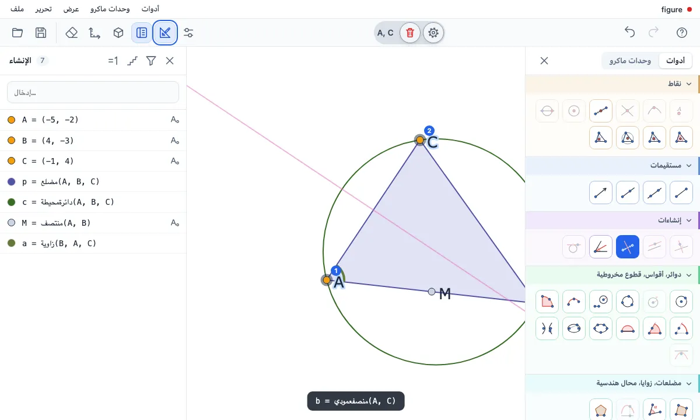

لوحة الأدوات

فتح اللوحة
- يفتح الزر في الشريط، أو عرض › لوحة الأدوات، لوحة جانبية تضم كل الأدوات ظاهرة دفعة واحدة، مرتبة حسب العائلات بألوان الحلقة، ثم في الأخير وحدات الماكرو الخاصة بالشكل.
- تظهر اللوحة عند التشغيل الأول. ثم يتذكر هذا المتصفح ما إذا كانت مفتوحة أو مغلقة عند التشغيل التالي.
- تشغل مكان لوحة الخصائص: فتح إحداهما يغلق الأخرى، دون ترك الأداة المستخدمة.
- النقر على عنوان عائلة يطويها أو يبسطها، ويتذكر DocGeo ذلك.
- يترك Esc الأداة أو التحديد، ثم يغلق اللوحة.
- على شاشة صغيرة، تغطي اللوحة الشكل وتُغلق بمجرد اختيار أداة. وتحت عرض 500 px ينتقل زرها من الشريط إلى جانب سطر الإدخال.
الإنشاء بأداة
- النقر على أداة يختارها؛ وإذا كانت مضغوطة، فإن نقرة جديدة تتركها.
- تضم اللوحة كل أدوات الحلقة وأدوات أخرى (الشارة الحلقة أدناه). لا تظهر عائلتا مستويات ومجسمات والأدوات الموسومة بـ 3D إلا في العرض ثلاثي الأبعاد.
- عائلة برامج، الغائبة عن الحلقة، تنشئ سلاحف وأزرارًا وبرامج أحداث (انظر الكتل والسلحفاة).
- واللوحة مفتوحة، النقر على عنصر يحدده دون فتح حلقة، والنقر على مكان فارغ يلغي تحديده. وتُعطَّل الأدوات التي لا تقبل العنصر أو التحديد المتعدد.
- واللوحة مفتوحة دون أداة، يُحرَّك الشكل فقط: النقر على مكان فارغ أو على تقاطع لا ينشئ نقطة. ولإنشاء نقطة، اختر أداة نقطة، أولى أدوات اللوحة.
- عند المرور فوق أداة، يعرض الإرشاد سطرها. وإذا كفتها العناصر المحددة، يظهر العنصر الذي ستنشئه باهتًا.
- يأخذ العنصر المحدَّد أولًا أي موضع يقبله نوعه: في العمودي، يمكن أن يأتي المستقيم قبل النقطة.
- تُحدَّد الوسائط أيضًا في لوحة «الإنشاء»: تظهر أسطر العناصر التي تقبلها الأداة مميزة بالأخضر، والأسطر الأخرى باهتة. ويمكن أن يُحدَّد فيها أيضًا عنصر مخفي. لا تُحدَّد فيها النقطة إلا إذا كانت موجودة، ويعطي فيها عنصران كل نقاط تقاطعهما. ما دامت الأداة نشطة، لا تعدّل النقرة على سطر هذا السطر. يصير السطر المحدَّد من قبل أزرق، مع موضعه في الأمر (1، 2…).
- الأداة دائمة: بعد كل عنصر، تنتظر من جديد وسيطها الأول. يبقى زرها مضغوطًا ويُظهر الشريط شريطًا فيه تم.
- يُبقى الوسيط المحدَّد مع Shift: تعيد الأداة أخذه بعد كل عنصر، إلى أن تغادرها. انقر مع Shift على محور تماثل، ثم انقر على كل عنصر يُراد تحويله؛ وكذلك مركز دوائر متحدة المركز. يفعل الزر إبقاء d في التعليمة الشيء نفسه (بالإصبع مثلًا)؛ ويطلبه تغيير d من جديد. لا ينطبق ذلك على أداة الحلقة ولا على العناصر المحدَّدة قبل الأداة.
- الخروج: تم، Esc، علامة ✕ في الإرشاد، نقرة جديدة على الأداة، الممحاة، خطوة بخطوة، أو نقرة في سطر الإدخال. التراجع والإعادة والخصائص والعرض ثلاثي الأبعاد تُبقي الأداة.
مع تحديد مسبق
تصبح العناصر المحدَّدة أولًا وسائطَ الأداة المختارة: انظر الإنشاء بالتحديد المتعدد.
تحويل عنصر
- يأخذ التحويل أولًا ما يعرّفه (المركز، المحور، المتجه، الدائرة)، ثم النقطة أو العنصر المراد تحويله: قطعة مستقيمة، مستقيم، شعاع، متجه، مضلع، دائرة، قوس، قطع مخروطي، منحنى دالة، محل هندسي؛ وفي الفضاء أيضًا مستوى أو كرة أو متعدد سطوح (إلا بالانقلاب).
- تحت المؤشر، تتقدّم النقطة ثم العنصر؛ وفي الفراغ تُنشأ نقطة. ويُظهر المرور فوق العنصر صورته باهتة.
- الصورة من طبيعة العنصر نفسها: مضلع لمضلع، ودائرة لدائرة… أما منحنى الدالة والمحل الهندسي وقوس القطع المخروطي فصورتها محل هندسي.
- بالانقلاب، صورة المستقيم أو الدائرة دائرة، أو مستقيم إذا مرّ بالمركز؛ وصورة المضلع مضلع أضلاعه منحنية.
- تأخذ الصورة لون عنصرها وتعبئته وحجمه وعتامته وتقطّعه. لا تُسحب، لكن يمكن وضع نقطة عليها.
- لتحويل عدة عناصر، حدّد المركز أو المحور مع Shift (وسيط مُبقى).
كل الأدوات
لكل أداة: ما تحدّده، ثم السطر المكتوب.
نقاط
-
نقطةالنقطة التي تلمسها: حرة في مكان فارغ، أو على عنصر، أو عند تقاطع عنصرين.
A = (x, y) -
نقطة على عنصرالحلقةعنصر: النقطة على هذا العنصر، حيث تلمسه. والنقر على مكان فارغ لا يفعل شيئًا.
نقطة(c, t) -
تقاطعالحلقةتقاطع بلمسة واحدة: تلك النقطة؛ أو العنصران أحدهما بعد الآخر: كل نقاط تقاطعهما، كما في GeoGebra (نقطتان لمستقيم ودائرة، حتى إن لم يتقاطعا بعد).
تقاطع(a, b) -
منتصفالحلقةنقطتان، أو قطعة مستقيمة.
منتصف(A, B) -
مركزالحلقةدائرة: مركزها.
مركز(c) -
تقاطعآخرعنصران، ثم نقطة موضوعة مسبقًا على أحد تقاطعاتهما: نقطة التقاطع الأبعد عنها.
تقاطعآخر(a, b, P) -
مركزالدائرةالداخليةثلاث نقاط، رؤوس مثلث: مركز دائرته الداخلية.
مركزالدائرةالداخلية(A, B, C) -
مركزالثقلثلاث نقاط: مركز ثقل المثلث.
مركزالثقل(A, B, C) -
مركزالدائرةالمحيطةثلاث نقاط: مركز الدائرة المحيطة.
مركزالدائرةالمحيطة(A, B, C) -
ملتقىالارتفاعاتثلاث نقاط: ملتقى ارتفاعات المثلث.
ملتقىالارتفاعات(A, B, C)
مستقيمات
-
قطعةالحلقةنقطتان، طرفاها.
قطعة(A, B) -
مستقيمالحلقةنقطتان من المستقيم.
مستقيم(A, B) -
شعاعالحلقةنقطتان: المبدأ، ثم نقطة من الشعاع.
شعاع(A, B) -
متجهالحلقةنقطتان: المبدأ، ثم النهاية.
متجه(A, B)
إنشاءات
-
عموديالحلقةنقطة ومستقيم، بأي ترتيب. في الأبعاد الثلاثة، مستقيم أو مستوى.
عمودي(P, d) -
موازيالحلقةنقطة ومستقيم، بأي ترتيب.
موازي(P, d) -
منصفعموديالحلقةنقطتان، أو قطعة مستقيمة.
منصفعمودي(A, B) -
منصفالزاويةالحلقةثلاث نقاط: نقطة من الضلع الأول، الرأس، نقطة من الضلع الثاني.
منصفالزاوية(A, O, B) -
مماسنقطة، ثم دائرة أو قطع مخروطي أو التمثيل البياني لدالة. تعطي الأداة المماس رقم 1؛ غيّر هذا الرقم إلى 2 في سطره للحصول على الآخر.
مماس(P, c, 1)
دوائر، أقواس، قطوع مخروطية
-
دائرة (مركز ونقطة)الحلقةالمركز، ثم نقطة من الدائرة.
دائرة(O, A) -
دائرة (مركز ونصف قطر)الحلقةالمركز فقط: في الحلقة، اضغط باستمرار على الأيقونة وحرّك الفأرة أو الإصبع ثم ارفع لتثبيت نصف القطر. من القائمة أو اللوحة، يكون نصف القطر الأولي نحو 150 بكسل. يمكن تغييره لاحقًا بسحب الدائرة أو في سطرها.
-
دائرةمحيطةالحلقةثلاث نقاط من الدائرة.
دائرةمحيطة(A, B, C) -
بركارنقطتان تعطيان نصف القطر، ثم المركز.
بركار(A, B, O) -
دائرة (مركز واتجاه ونصف قطر)3Dالمركز، ثم مستقيم (المحور) أو مستوى (موازٍ للدائرة)، بما في ذلك الأرضية. نصف القطر نحو 150 بكسل.
دائرة(O, 3.8, d) -
دائرة (محور ونقطة)3Dمستقيم، هو المحور، ثم نقطة من الدائرة.
دائرة(d, P) -
قوسثلاث نقاط: البداية، نقطة يمر بها، النهاية (في الأبعاد الثلاثة، في مستواها). أو دائرة أو قطع ناقص، ثم البداية والنهاية (الاتجاه الموجب).
قوس(A, B, C),قوس(c, P, Q) -
قطاعكما في القوس، ثلاث نقاط، أو دائرة أو قطع ناقص ونقطتان: القطاع الذي يحدّه.
قطاع(A, B, C),قطاع(c, P, Q) -
قوسمركزالمركز، البداية، ثم نقطة من الشعاع الذي ينتهي عنده القوس (الاتجاه الموجب). في الأبعاد الثلاثة، قوس الزاوية AMB في مستواها.
قوسمركز(M, A, B) -
قطاعمركزمثل
قوسمركز: القطاع.قطاعمركز(M, A, B) -
نصفدائرةنقطتان، طرفا القطر: نصف الدائرة على يسار [AB].
نصفدائرة(A, B) -
قطعمخروطيخمس نقاط من القطع المخروطي. من النقطة الثانية، تُظهر المعاينة القطع المخروطي الأقرب إلى دائرة.
قطعمخروطي(A, B, C, D, E) -
قطعناقصالبؤرتان، ثم نقطة من القطع الناقص.
قطعناقص(F, G, P) -
قطعزائدالبؤرتان، ثم نقطة من القطع الزائد.
قطعزائد(F, G, P) -
قطعمكافئالبؤرة، ثم الدليل.
قطعمكافئ(F, d)
مضلعات، زوايا، محال هندسية
-
مضلعالحلقةالرؤوس واحدًا تلو الآخر، ثم الأول مرة أخرى للإغلاق.
مضلع(A, B, C) -
زاويةالحلقةثلاث نقاط: نقطة من الضلع الأول، الرأس، نقطة من الضلع الثاني.
زاوية(A, O, B) -
محلهندسيالحلقةنقطة تتعلق بنقطة على عنصر: محلها الهندسي عندما تجري تلك النقطة على عنصرها.
محلهندسي(M, P) -
مضلعمنتظمرأسان متتاليان: تعطي الأداة مربعًا؛ غيّر عدد الأضلاع في سطره.
مضلعمنتظم(A, B, 4)
تحويلات
-
تماثل مركزيالحلقةالمركز، ثم النقطة أو العنصر المراد تحويله.
انعكاس(O, P) -
تماثل محوريالحلقةالمحور، ثم النقطة أو العنصر المراد تحويله.
انعكاس(d, P) -
دورانالمركز، ثم النقطة أو العنصر: ربع دورة، تغيّرها في سطره.
دوران(O, P, 90) -
انسحابالمتجه، ثم النقطة أو العنصر.
انسحاب(u, P) -
تحاكيالمركز، ثم النقطة أو العنصر: نسبة 2، تغيّرها في سطره.
تحاكي(O, P, 2) -
انقلابدائرة الانقلاب، ثم النقطة أو العنصر.
انقلاب(c, P)
مستويات
-
مستوى3Dثلاث نقاط، أو نقطة ومستقيم.
مستوى(A, B, C) -
مستوىموازي3Dنقطة ومستوى (بما في ذلك الأرضية): المستوى الموازي المار بالنقطة.
مستوىموازي(A, p) -
مستوىعمودي3Dنقطة ومستقيم: المستوى العمودي على المستقيم.
مستوىعمودي(A, d)
مجسمات
-
كرةالحلقة3Dالمركز، ثم نقطة من الكرة.في حلقة أدوات النقطة، توجد هذه الأداة بجوار أدوات الدوائر.
كرة(O, A) -
أسطوانة3Dنقطتان، طرفا المحور. نصف القطر نحو 150 بكسل.
أسطوانة(A, B, 3.8) -
مخروط3Dمركز القاعدة، ثم الرأس. نصف القطر نحو 150 بكسل.
مخروط(A, B, 3.8) -
مكعب3Dنقطتان من المستوى نفسه أو على الارتفاع نفسه، وإلا فثلاث نقاط (انظر الأبعاد الثلاثة).
مكعب(A, B, C) -
موشور3Dمضلع، هو القاعدة، ثم نقطة، رأس للوجه المقابل.
موشور(p, P) -
هرم3Dمضلع، هو القاعدة، ثم الرأس.
هرم(p, S) -
مقطع3Dمجسم (كرة، أسطوانة، مخروط، متعدد سطوح) ومستوى، بأي ترتيب.
مقطع(s, p) -
شبكة3Dمكعب أو موشور أو هرم: شبكته المسطحة.
شبكة(c, 1)
برامج
-
برنامج جديديفتح برنامجًا فارغًا في الخصائص.
-
سلحفاةنقطة، أو موضع فارغ ينشئ نقطة: السلحفاة التي تنطلق من هذه النقطة، مفتوحة بالكتل.
TURTLE_INIT("A", A) -
زرموضع سهمه: الزر، وبرنامجه مفتوح بالكتل.
زر("تشغيل") -
عند سحب الكائننقطة قابلة للسحب: البرنامج الذي يعمل عند سحبها، مفتوح بالكتل.
-
عند الضغط على الكائننقطة قابلة للسحب: البرنامج الذي يعمل عند الضغط عليها، مفتوح بالكتل.
-
عند إفلات الكائننقطة قابلة للسحب: البرنامج الذي يعمل عند إفلاتها، مفتوح بالكتل.
-
عند تغيّر القيمةتعبير: البرنامج الذي يعمل عند تغيّر قيمته، مفتوح بالكتل.
وحدات ماكرو
-
ماكرو جديدالعناصر المحددة عناصرَ ابتدائية أولى: تعريف ماكرو؛ وتليه وحدات ماكرو الشكل (انظر وحدات الماكرو).
تنشئ التحويلات صورة نقطة أو عنصر (انظر
تحويل عنصر). بلوحة المفاتيح
فقط: نقطةثابتة، رأس،
منزلقة، قائمة، تقاطعات الفضاء،
قطعناقص(F, G, a) و
قطعزائد(F, G, a) (انظر
الأوامر).